China Employee Termination in 2026: Pulse Signal-Stack Brief for Foreign Employers
Key takeaways
- China termination is not an at-will process; foreign employers should start with legal route fit, then manage evidence and payroll consistency as one control system.
- The highest dispute risk is usually created by execution drift, not by headline legal misunderstanding.
- A Pulse-style signal stack helps overseas decision-makers see where cases are stable, where they are degrading, and where immediate intervention is required.
- Settlement exits can reduce friction, but only if legal language, payroll coding, tax treatment, and manager communication remain aligned.
- City-level implementation differences still matter; unresolved local interpretation should trigger a hold before employee-facing action.
Morning brief: what changed for foreign operators
Foreign employers managing China teams are facing a practical reality: termination compliance is now less about static legal summaries and more about daily execution quality under time pressure. The legal foundation is stable, but dispute outcomes continue to turn on whether HR, line managers, payroll, and legal teams executed the same story with the same records. In other words, the legal route gets you onto the road, but operational discipline decides whether you reach the destination without a labor dispute.
For non-local leadership, this means your operating question should not be “Do we have a lawful basis in theory?” It should be “Can we prove a coherent and fair process end-to-end, including final pay and documentation?” The signal-stack format below is designed for exactly that decision need.
Plain-language legal context first (for non-local teams)
In China, employer-initiated termination generally needs a lawful statutory basis under the Labor Contract Law framework, supported by facts and process evidence. Unlike at-will systems, an employer cannot rely on broad managerial discretion alone. If the case reaches arbitration or litigation, decision-makers often test whether the chosen route was supported by contemporaneous records, whether communication was consistent, and whether payroll treatment matched the legal narrative.
Three legal anchors matter most for foreign employers. First, the Labor Contract Law sets route architecture and severance logic. Second, State Council implementation rules provide practical interpretation of that architecture. Third, the SPC labor-dispute interpretation shapes how adjudicators evaluate evidence, procedure, and burden. Together, these make one operational point clear: compliance is cumulative. A weak handover between legal, manager, and payroll teams can undermine an otherwise defensible route.
Pulse signal stack: headline-driven risk board
Signal 1 — Route Clarity: **Green if single-route logic is documented**
What it means: The case has one explicit statutory rationale, no internal contradictions, and approved fallback guidance.
Why leadership should care: Route ambiguity is a fast multiplier for legal cost and management distraction.
Immediate action if amber/red: Freeze external communication, issue one canonical route memo, and assign legal owner for variance checks.
Signal 2 — Evidence Continuity: **Green if chronology is complete and version-locked**
What it means: Facts, dates, prior notices, performance records, and signatures are coherent and time-stamped.
Why leadership should care: Evidence gaps are often more damaging than imperfect drafting.
Immediate action if amber/red: Hold case progression, run chronology reconciliation, and reopen only after contradiction log is closed.
Signal 3 — Communication Discipline: **Green if script and delivery match**
What it means: Manager, HR, and legal use approved language with no off-script commitments.
Why leadership should care: Informal promises or inconsistent explanations frequently become dispute leverage.
Immediate action if amber/red: Require script re-briefing and manager acknowledgement before next employee touchpoint.
Signal 4 — Settlement-to-Payroll Integrity: **Green if legal terms map to payroll coding**
What it means: Settlement clauses, severance items, tax assumptions, and payroll entries reconcile line by line.
Why leadership should care: Payment mismatch can reopen legal exposure after “agreement” appears complete.
Immediate action if amber/red: Trigger legal-payroll joint sign-off gate before payroll lock.
Signal 5 — Local Rule Confirmation: **Green if city-level checks are complete**
What it means: Local practice caveats have been reviewed and logged for the specific city.
Why leadership should care: National-law reading alone may miss city-sensitive implementation points.
Immediate action if amber/red: Block release until local validation memo is completed.
Signal 6 — Closure Evidence: **Green if payment proof and archive packet are complete**
What it means: Final payment proof, handover records, and closure checklist are complete and auditable.
Why leadership should care: In disputes, post-event record quality can decide outcome quality.
Immediate action if amber/red: Do not mark case closed; keep open with owner and ETA.
Practical implications for foreign employers
For international finance and HR leaders, the signal stack changes decision cadence. Instead of broad legal updates once a quarter, you get a compact daily view: where risk is increasing, which function owns remediation, and whether employee-facing steps should pause. This is especially useful for teams running China operations from another time zone, where delayed escalation can push a case into payroll cutoff or legal deadline windows.
The model also improves internal accountability. Legal can own route integrity, HR can own process flow and records, managers can own factual communication, and payroll can own payment/tax consistency. When these responsibilities are visible and time-bound, foreign employers reduce “silent drift” — the common situation where every team assumes someone else has validated a critical assumption.
Scenario snapshots (instead of timeline template)
Scenario A: Performance-based route with evidence stress
A foreign-invested company selects a performance-related termination route. Legal rationale is initially sound, but manager notes and HR records are not fully aligned, and one key performance checkpoint lacks signature evidence. The signal stack turns Signal 2 amber before employee notification. The team pauses, reconciles chronology, and logs corrected ownership. Result: slower case progression but materially lower arbitration vulnerability.
Scenario B: Negotiated exit with payroll mismatch risk
An overseas HQ approves a negotiated package quickly to reduce management disruption. Draft terms are acceptable, but payroll coding initially treats one component inconsistently with internal tax assumptions. Signal 4 shifts to red. Legal and payroll run a line-item map, revise explanatory language, and complete co-sign before lock. Result: cleaner closure packet and lower chance of post-payment dispute.
Daily operations SOP (role-by-role)
HR operations lead
- Open daily signal review for all active termination cases.
- Confirm Signal 1-3 status before any employee-facing communication.
- Escalate amber/red signals with owner and target resolution time.
- Record all major state changes in immutable case notes.
Legal reviewer
- Validate route legality and fallback boundaries.
- Approve communication script and settlement language.
- Co-sign payroll-sensitive decisions when legal interpretation affects treatment.
- Maintain a short “risk rationale” note for leadership reporting.
Line manager
- Use approved script only; avoid off-record promises.
- Submit factual updates with dates and supporting records.
- Escalate any factual change immediately to HR/legal.
Payroll and finance
- Map each settlement component to payroll and tax fields before cutoff.
- Validate statutory and contractual payment elements.
- Retain payment proof and reconciliation artifacts in closure packet.
Compliance/PMO
- Audit signal changes and reason codes.
- Track recurring red-signal causes by function and city.
- Run weekly corrective-actions review for repeated exceptions.
Required document checklist (minimum viable packet)
- Canonical route memo (single source of truth)
- Evidence chronology log (versioned)
- Approved employee communication script
- Settlement term sheet + approval trail
- Payroll mapping worksheet (item-to-code crosswalk)
- Local validation memo (city-specific)
- Final payment proof and closure archive checklist
Recommended service-level targets:
- Route memo finalized within 1 business day of case opening
- Evidence chronology reconciled within 2 business days
- Settlement/payroll mapping completed before payroll lock window
- Closure archive finalized within 2 business days after payment execution
Exception handling playbook
If route clarity degrades
Pause outward communication, reissue route memo, and require legal re-approval before restart.
If evidence continuity fails
Freeze case progression, run discrepancy sweep, and clear contradictions with named owner and deadline.
If communication discipline breaks
Stop manager contact temporarily, retrain with approved script, and document corrective acknowledgment.
If settlement/payroll mismatch appears
Activate legal-payroll escalation lane, correct coding and wording together, and rerun approval gate.
If local validation is incomplete
Treat as hard hold. No release until local memo is logged.
If closure packet is incomplete
Do not close case status. Complete payment proof and archive controls first.
System implementation notes (for payroll/HRIS teams)
Recommended core fields:
case_id,city,route_status,evidence_status,comms_status,settlement_status,payroll_status,local_validation_status,closure_statusrisk_signal_overall(green/amber/red)owner_current,eta_resolution,last_update_ts
Control logic:
- Block release when Signal 1-5 is red.
- Block closure when Signal 6 is not green.
- Require reason code for every amber/red state.
- Auto-alert leadership when a red signal is unresolved beyond SLA.
Common mistakes and prevention
Mistake 1: Treating legal route confirmation as completion
Prevention: Use six-signal monitoring until closure evidence is complete.
Mistake 2: Allowing multiple versions of core documents
Prevention: Enforce single-source policy for route memo, script, and settlement sheet.
Mistake 3: Informal manager explanations overriding approved script
Prevention: Require pre-brief and post-call confirmation check.
Mistake 4: Payroll coding done too late
Prevention: Move settlement-to-payroll mapping into pre-lock mandatory gate.
Mistake 5: Assuming national rules remove local variance
Prevention: Keep city-level validation as non-optional control.
What to do now (operator checklist)
- Deploy a daily six-signal dashboard across active China termination cases.
- Assign one accountable owner and ETA for every amber/red signal.
- Require legal-payroll co-sign on all settlement components before lock.
- Add city-validation memo template to case opening pack.
- Standardize closure evidence packet and closure gate logic.
- Report weekly trend: red-signal count, time-to-resolution, and repeat root causes.
What to watch next
- Arbitration practice may continue to focus on process coherence over abstract policy arguments.
- Foreign employers should monitor local enforcement emphasis in cities where headcount is concentrated.
- Settlement tax treatment remains a practical risk point where legal and payroll language diverge.
- Documentation quality will likely remain the decisive factor in dispute defensibility.
FAQ
Is this a legal opinion?
No. This briefing is informational and operations-oriented.
Can employers still use unilateral termination routes in China?
Potentially yes, where legal conditions and evidence support that route. Case facts remain critical.
Why prioritize payroll mapping in a legal process?
Because payment execution inconsistencies can undermine settlement defensibility.
Do local differences really matter for foreign employers?
Yes. City-level implementation differences can affect practical dispute outcomes.
What KPI should global leadership track first?
Start with red-signal resolution time and percentage of cases closed with full evidence packet completeness.
How often should teams run this review?
At least daily during active termination cycles; more frequently near payroll lock or high-risk events.
Legal depth appendix (secondary)
This brief is anchored to: (1) Labor Contract Law of the PRC, (2) State Council Implementation Regulations (Decree No. 535), and (3) SPC labor-dispute interpretation (Fa Shi [2020] No. 26). Practitioner sources (China Briefing, Littler, ICLG) provide foreign-employer implementation framing, while PwC context supports payroll/tax treatment awareness for settlement execution.
Disclaimer
This content is informational only and does not constitute legal, tax, or employment advice. Employers should seek qualified PRC legal and tax counsel for case-specific decisions.
Sources
- National People’s Congress — Labor Contract Law of the PRC (English): http://www.npc.gov.cn/zgrdw/englishnpc/Law/2007-12/13/content_1384064.htm (accessed 2026-03-04).
- State Council — Implementation Regulations of the Labor Contract Law (Decree No. 535): https://www.gov.cn/gongbao/content/2008/content_1124615.htm (accessed 2026-03-04).
- Supreme People’s Court — Interpretation on Application of Law in Labor Dispute Cases (Fa Shi [2020] No. 26): https://www.court.gov.cn/fabu/xiangqing/243981.html (accessed 2026-03-04).
- China Briefing / Dezan Shira — Employee Termination in China (updated 2025-10-17): https://www.china-briefing.com/news/employee-termination-in-china/ (accessed 2026-03-04).
- Littler — Key Recent Developments in China’s Employment Law: https://www.littler.com/news-analysis/asap/key-recent-developments-chinas-employment-law-china-us-comparative-perspective (accessed 2026-03-04).
- PwC Worldwide Tax Summaries — PRC Individual: Taxes on Personal Income: https://taxsummaries.pwc.com/peoples-republic-of-china/individual/taxes-on-personal-income (accessed 2026-03-04).
- ICLG / Zhong Lun — Employment and Labour Laws and Regulations: China: https://iclg.com/practice-areas/employment-and-labour-laws-and-regulations/china (accessed 2026-03-04).
Need local employment support in China?
If you need a compliance-first partner for hiring, payroll, and risk controls in China, China-Payroll.com can help evaluate the right setup.
Image Prompt Pack
Create a 16:9 hero image for article title: 'China Employee Termination in 2026: Pulse Signal-Stack Brief for Foreign Employers'. Scene: global operations team evaluating workforce model options for China market entry. Include motifs: decision matrix, org char…